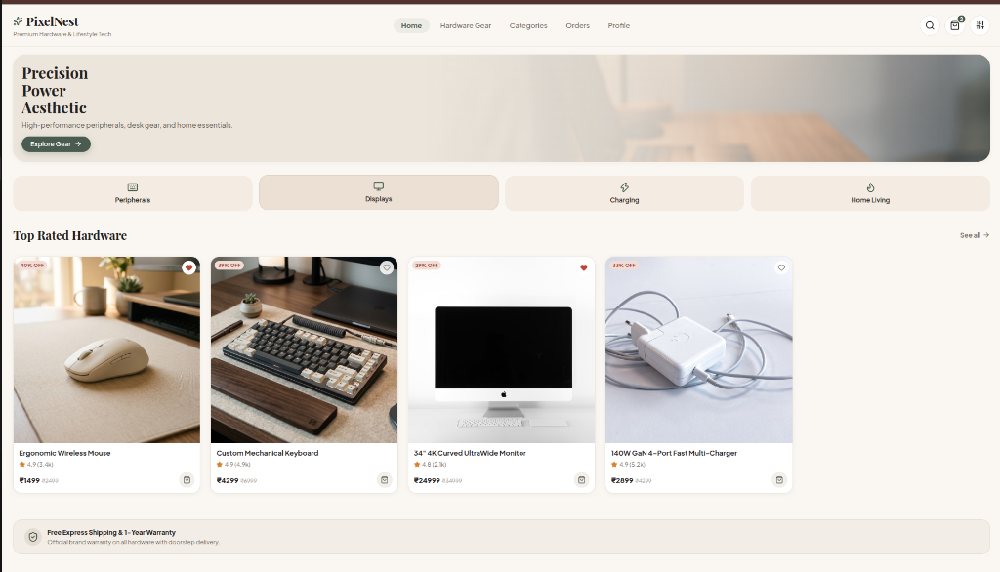

01
—
E-Commerce / React 19 / Headless Shopify
PixelNest — Headless Commerce & Admin Portal
Ultra-fast headless e-commerce storefront and merchant control panel engineered with React 19, Tailwind CSS, and Shopify Storefront GraphQL API. Delivers sub-second transitions, dynamic cart state management, and real-time inventory synchronization.
React 19
Shopify Storefront
GraphQL API
Tailwind CSS
Headless Architecture
